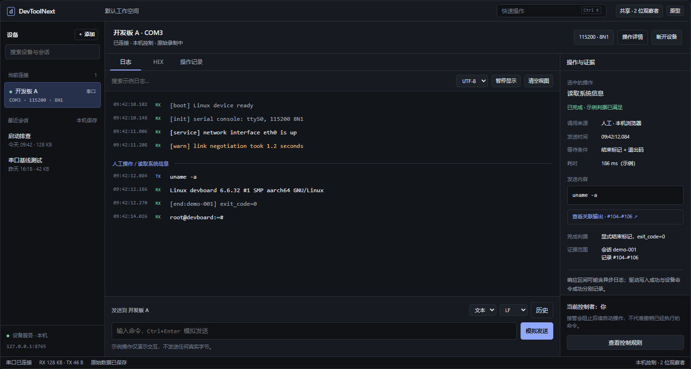
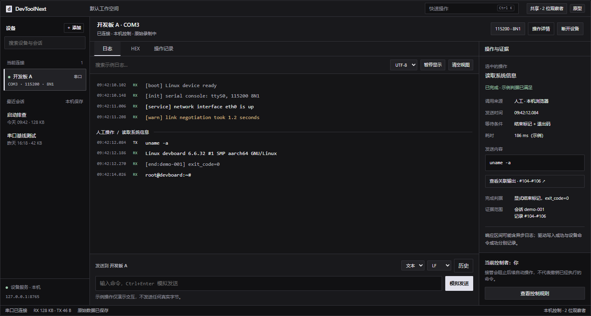
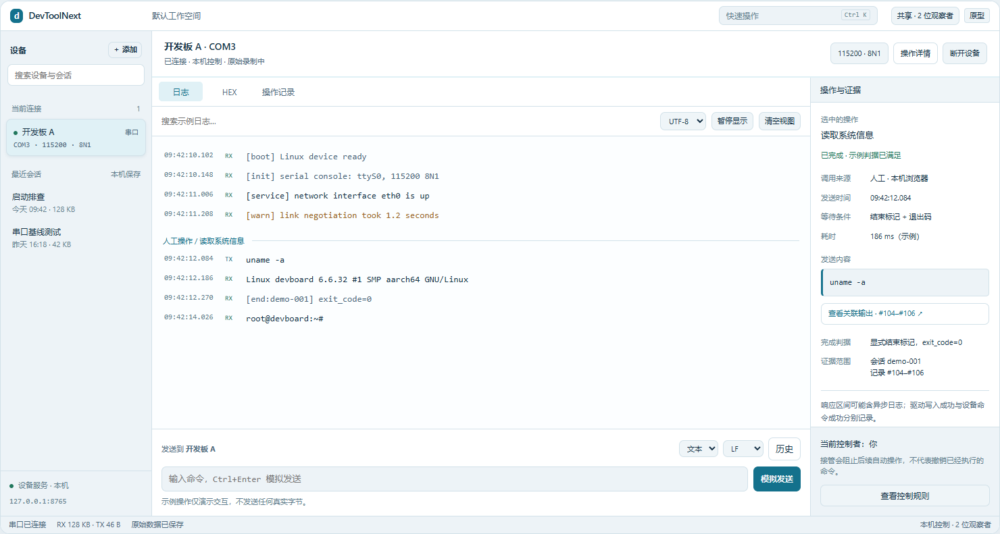
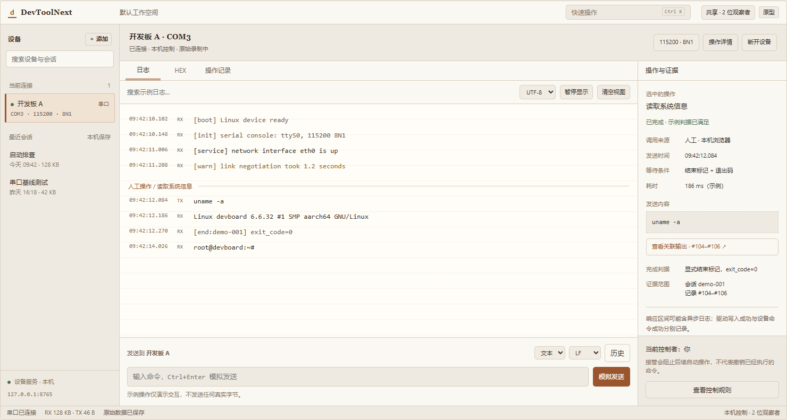
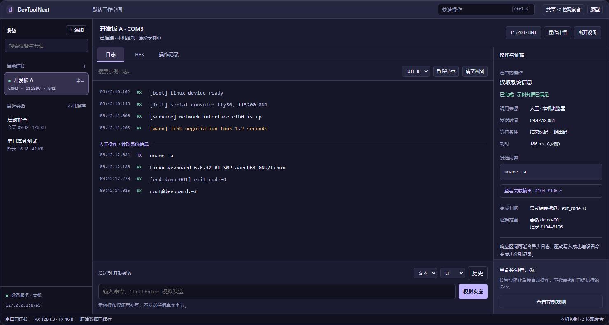
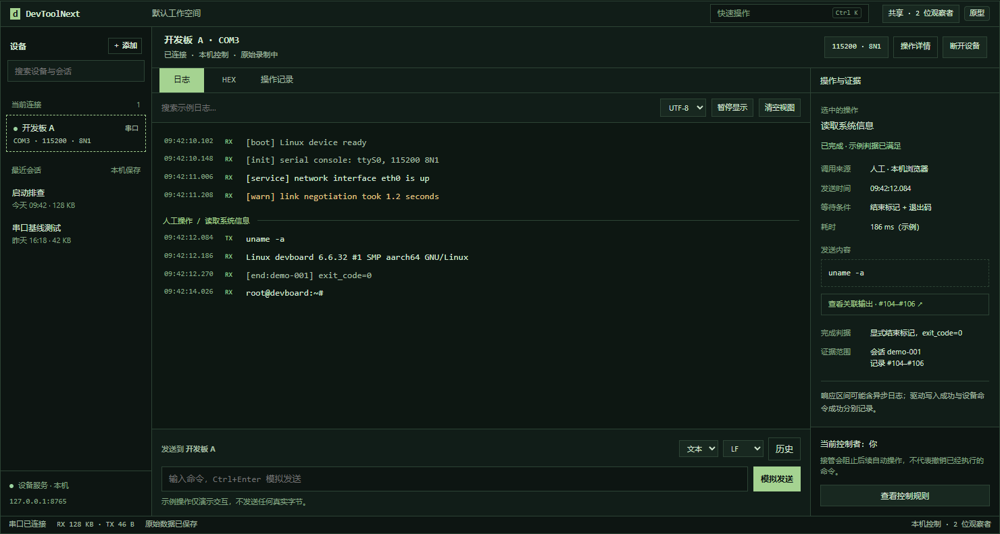

01 / STUDIO
体验此风格 ↗开发工作台

均衡、克制，适合日常排障。
中性灰 · 柔蓝强调 · 标准密度
相同功能与示例数据，比较视觉、密度和组件语言。点击截图进入可交互原型。

均衡、克制，适合日常排障。

把装饰降到最低，让输出成为主角。

层级清楚，偏向仪器和测量工作。

温和的阅读氛围，适合日志复盘。

通过表面层次表达工作区与操作上下文。

偏重持续日志与键盘工作。